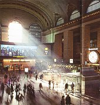
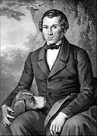
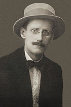
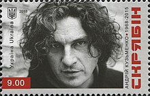

- 962 — Оттон став першим імператором Священної Римської імперії з Саксонської династії
- 1536 — іспанський конкістадор Педро де Мендоса заснував Буенос-Айрес
- 1558 — відкрито університет у Єні, заснований велінням Фердинанда I
- 1656 — освячений Кафедральний собор Мехіко, один з найбільших і найдавніших у Латинській Америці
- 1848 — підписаний договір Гвадалупе-Ідальго, за яким закінчувалась Американо-мексиканська війна, а Мексика поступалася Штатам 1,36 млн км² території в обмін на 15 млн доларів
- 1913 — у Нью-Йорку відкритий Grand Central Terminal, найбільший залізничний вокзал світу <>
- 1914 — вийшов у прокат перший фільм із Чарлі Чапліном — «Заробляючи на життя»
- 1922 — перша повна публікація роману Джеймса Джойса «Улісс»
- 1924 — Велика Британія встановила дипломатичні відносини з Радянським Союзом
- 1932 — нарком постачання СРСР Анастас Мікоян видав наказ про створення постійного запасу хліба в Закавказзі в кількості 2 млн пудів пшениці і 2 млн пудів кукурудзи за рахунок України і Кубані
- 1959 — загибель туристичної групи Дятлова на Північному Уралі, що породила численні версії
- 2009 — у Зімбабве пройшла деномінація зімбабвійського долара за курсом 1 000 000 000 000 : 1

Народилися
-
1812 — Євген Гребінка, український письменник
 -
1829 — Альфред Брем, німецький зоолог
-
1845 — Іван Пулюй, український фізик і електротехнік, організатор науки, громадський діяч
-
1861 — Соломон Гуггенхайм, американський меценат єврейського походження
-
1882 — Джеймс Джойс, ірландський письменник
 -
1893 — Сухе-Батор, керівник монгольського визвольного руху в часи Монгольської революції (1921)
-
1901 — Валер'ян Підмогильний, український письменник, перекладач
Померли
- 1936 — Євген Плужник, український поет, драматург, перекладач, жертва сталінського терору
- 1970 — Бертран Рассел, британський філософ, лауреат Нобелівської премії
- 2015 — Андрій «Кузьма» Кузьменко, український співак, композитор, автор пісень, лідер гурту «Скрябін»
